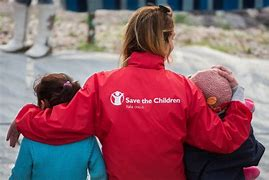
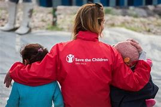
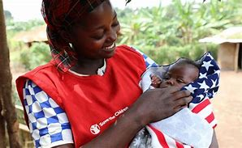

.jpg)
.jpg)
.jpg)
Save the Children we travel to varouis diffrent corners of the world such as cities and even villages where its tough for children to be and live. We make sure to communicate to children, their families and even their communities on what their needs maybe for example health, safty and education. We also make sure to listen to their diffrent experiences,ideas and insights and ideas.
Save the chuldren belives that no children should suffer from something that is preventable. Over the years we have seen a real progress in helping children survive their first few years of life. And yet, Shocking number of children across the world are getting ill from sicknesses that are entirely preventable. Millions of these children across the world still don't have basic needs such as clean water,food and clean air.

.jpg)
At Save the Children we work towards helping every kid. We work really closly with goverments and even our partnrs to make sure all the children are safe throughout birth and pregnancy, with all the nutrition and even medical care that they need reach their fifth birthday, and thrive into adulthood.
Each and everyday our teams across the world are saving as many lives as we can and ensuring that we delivering healthcare to some of the hardest places that are tough to reach, whether that is in war zones or remote villages. The Save the Children health unit makes sure that the right people, are in the right places and are always ready to save lives.
We work hard to ensure that every child can learn and have a great education with quility teaching. All children should learn a quility basic education. Education has
amazing power to change the lives of a child. In this world there are millions of children that are being robbed of a chance to have a quality level of education
and the simple reasons are because of who they are and where they live. Being deprived of a learning is a crime that no child should ever have to face and here at Save the
Children we do beilve that every child deserves a great education.
As the increase in violent conflict across the globe such as destorying healthcare systems and even disease outbrakes and hunger crises, kids and their family now needs now more than ever a way to recive humanitarian healthcare. Emergency Health Unit takes charge of disasters that can wipe out communities, this includes many forgotten crrises where many kids suffer may go unnoticed.This includes.
Basic health services this includeds support for mental health and common disease treatments. This type of services could be deliverd ethier through self-sufficient or mobile clinics.
Making sure that diseases such as cholera,measles and malaria are contained by ensuring treatment when and also where it is need in the communities.
 

The Save the Children’s Emergency Health Unit has made sure that the correct people are in the correct places and can save lives. The teams have experts with decades of experience making sure to deliver healthcare to those in need espectally those in hard to reach places.
Mass vaccination campaings can help millions of children from getting the most common yet life threatening diseases. Save the Children can provide over 165,000 children and adults per week.

Save the Children we travel to varouis diffrent corners of the world such as cities and even villages where its tough for children to be and live
We work hard to ensure that every child can learn and have a great education with quility teaching. All children should learn a quility basic education. Education has amazing power to change the lives of a child.
Save the Children agreed on a new worldwide strategy in the year 2015 Ambition for Children 2030. We also published a strategic plan for 2016-2018. You Through this strategy, aims to harness our resources, energy, knowledge and expertise to drive our three global breakthroughs for 2030: